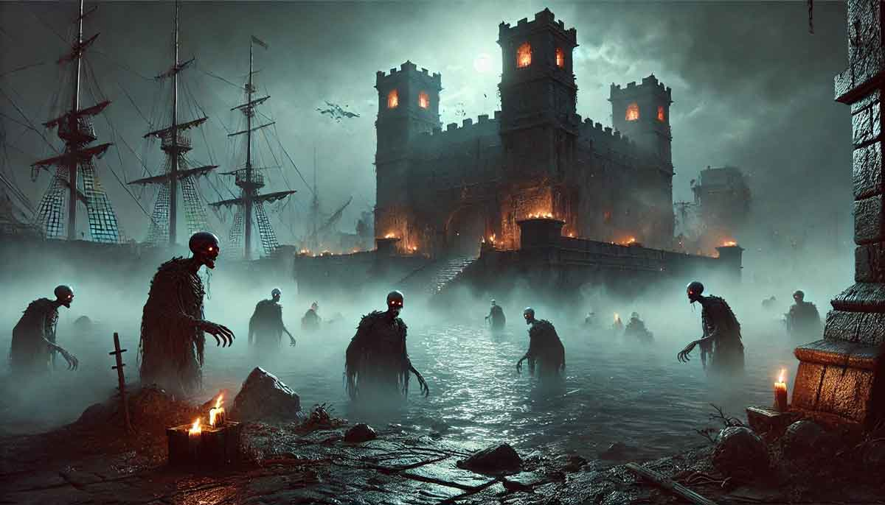

Claiming the Island of Empty Eyes
August 31, 2024
After their triumphant victory in the Captain’s Regatta, the crew of the Scourge’s Bane sailed back to Port Peril. Their legend had already outpaced them, spreading through the taverns and streets like wildfire. Tales of their daring exploits echoed from every corner, and the officers found themselves the subject of countless songs and toasts. In every inn, tankards were raised in their honor, their drinks paid for by admirers and fellow captains. Their friends and allies congratulated them heartily, but it was the invitation to a feast hosted by the Pirate Council itself that truly marked their place in the Shackles' history.
As the celebration raged, the Master of the Gales pulled the officers aside. “Your prize,” he said, his voice low and serious, “is an island. North of the Rampore Isles, in a remote archipelago. It’s called the Island of Empty Eyes, named for the strange statues that stare out over its shores. The island is yours—but don’t expect it to be an easy conquest.” He glanced at each of them in turn, his eyes like ice. “There are dangers on that island. If you want to claim it and take your place on the Pirate Council, you’ll need to tame it. In three months’ time, the Council will visit to see if you’re fit for the honor. You’ll be expected to host them, as lords of the Shackles deserve. If you succeed, they’ll take your oath of loyalty and give you your seat on the Council. If not… you won’t be the first Regatta champion to fail.”
The officers of the Bane exchanged determined glances. They knew the legends of the Island of Empty Eyes. They would claim it—or die trying.
The very next morning, they set sail for their new domain. Arriving at the island, Varen scanned the coastline from the crow’s nest. After some discussion, they decided against the larger coves and guided the Bane into a small, protected bay in the southeast. The closer they got, the thicker the seaweed became, clogging the waters and emitting a strange, foul smell.
Suddenly, Kasmira’s voice rang out. “Treasure! I see something in the seaweed—looks like a chest!” She insisted they investigate, and soon the officers were in a small boat, rowing toward the suspicious object. As they neared, the seaweed itself erupted into life, lashing out with vine-like tendrils. Varen and Owlbear were caught in its writhing grasp, and Varen’s cutlass did little to free him.
Red’s axe barely scratched the creature, but Kasmira’s bullets tore through it. Varen, thinking quickly, phased out of the creature’s hold and reappeared with his musket. His shots ripped into the creature, and soon Kasmira and Varen’s combined firepower brought it down. The seaweed slumped into the water, dead—the “treasure” had been nothing more than a lure.
Undeterred, the officers rowed ashore and began exploring their new home. As they walked along the beach, they heard an ethereal singing drifting through the rocks. Following the sound, they came upon a grotto with crystal-clear water—and a woman, or rather, a fey, bathing within. She rose from the water, smiling warmly. Introducing herself as Sefina, she explained that she had made the island her home long ago and welcomed them as its new masters. Though wary, the crew found her to be genuine, and after some conversation, they bid her farewell, promising to speak again soon.
Continuing their exploration, they reached the largest cove, where a waterfall split the beach. On the far side, they spotted a dilapidated fort, its walls crumbling but still standing. Kasmira, eager to investigate, used her magic tricorne to conjure a boat, and the group set off across the waters.
Halfway across, disaster struck. Tentacles as thick as tree trunks burst from the depths—a massive octopus had been lurking below, waiting for prey. The creature’s limbs wrapped around the boat, lifting the officers into the air. Red quickly cast a spell to protect the group, while Kasmira fired her pistol into the writhing tentacles. Varen, his eyes glowing with dark energy, drained the life from the beast even as it pulled them into the water.
The octopus dragged Kasmira toward its massive maw, ready to bite down, but she pressed her pistol to its flesh and fired, the shot echoing through the water. The octopus shuddered, then went still, releasing its grip as it sank back into the depths. The crew, wet and bruised, hauled themselves back into the boat and continued toward the fort.
Entering through the shattered gates, they found the fort in ruins, but still salvageable. This could be their new home—if they could survive its dangers. Inside the first building, they were immediately struck by a wave of fear so intense that Owlbear fled in terror. The others, though shaken, held their ground as a dark, nightmarish figure emerged from the shadows.
They fought back, but their weapons did little to harm the creature. It wasn’t until Red cast a spell that solidified the swirling shadows that they were able to land any meaningful blows. With renewed vigor, they destroyed the creature, but it had cost them dearly.
Upstairs, the fort was riddled with traps. Each room they entered seemed more dangerous than the last. Finally, they reached a corner room, where a voice shouted from within. “Go away! Leave me alone!” Kasmira picked the lock and opened the door, revealing a man huddled in the top corner of the room—his back pressed against the ceiling. His eyes were wild with madness, and no amount of soothing words from Kasmira could calm him. At one point, he even screamed, “Get out of my head!” and triggered an electrical trap, nearly frying Kasmira.
Reluctant to harm the man, and with night falling, they decided to leave him be for now, hoping if they brought Sandara, she could heal his mind later. Red flew back to the ship to move it to the large cove, where they could anchor for the night.
That decision may have saved their lives. As darkness fell over the island, a thick mist rose from the ground. Lights appeared in the towers of the fort, casting an eerie glow over the courtyard. The crew watched in horror as undead figures began to shuffle through the fort, their rotting eyes turning toward the Scourge’s Bane. They walked into the water, glaring at the ship with malice, their decaying flesh hanging from their bones.
As the mist thickened and the dead crept ever closer, their hollow eyes gleaming with malice, one truth became chillingly clear—their island was not just dangerous. It was cursed. And the horrors that waited in the darkness were only beginning to stir.